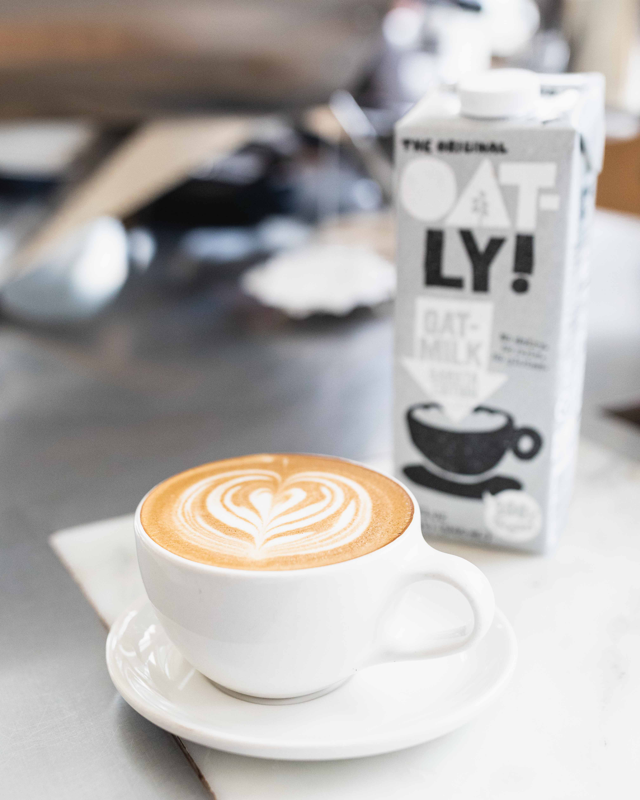
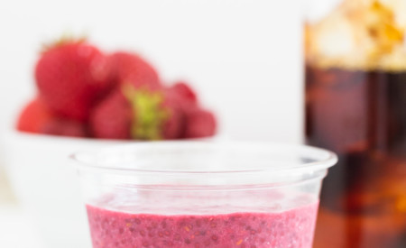

-

你的咖啡加奶油？
当着名的MarquisedeSévigné诙谐在十七世纪的某个时候，将牛奶 咖啡称为“ 世界上最美好的东西 ”，向咖啡添加牛奶的做法已有数百年的历史。
无论你是否喜欢简单的杯子和最美味的搭配，你必须承认，带咖啡的咖啡几乎和咖啡本身一样多。这些天，问题不在于在你的咖啡中添加牛奶或奶油是否合适，而是最完美的补充。
咖啡的非乳制品替代品
非乳制奶替代品的飙升 意味着您不太可能遇到一个咖啡馆，其中至少有一个不在菜单上。大豆，杏仁，腰果，大麻，椰子和燕麦牛奶，以及各种其他选择，现在在桌子上和酒吧后面。虽然你不能再认为究竟是什么进入了你的 Cafe Au Lait咖啡馆，但这种转变对于那些出于道德，饮食限制，健康或纯粹偏好的人避免牛奶有利于其他事物的人来说是一个福音。目前，Blue Bottle Coffee提供燕麦奶作为其非乳制奶替代品。
通过Oatly，我们可以提供非乳制品替代品，我们可以免费为客人提供，但这也很美味。 与用杏仁或大豆制成的牛奶相比，素食主义者和无麸质牛奶的奶油味 与其相对可持续性相结合，意味着它符合我们的热情好客，美味和可持续性的价值观。
将您最喜爱的无乳饮料与我们的新素食和无麦烹饪产品配对。
-
分享这个故事
也在顾客评价 素食和无麦食物在我们的新夏季菜单上闪耀
还有一些经典之作由蓝瓶工作人员
联系我们

查看BLUE COFFEE微博
庆祝咖啡的艺术和科学
阅读更多>